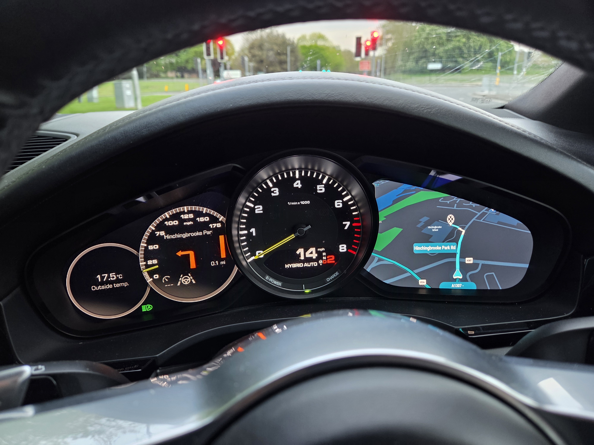
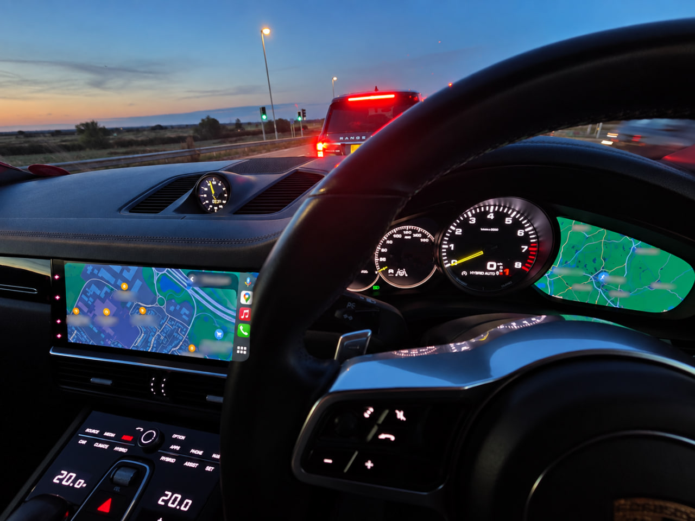
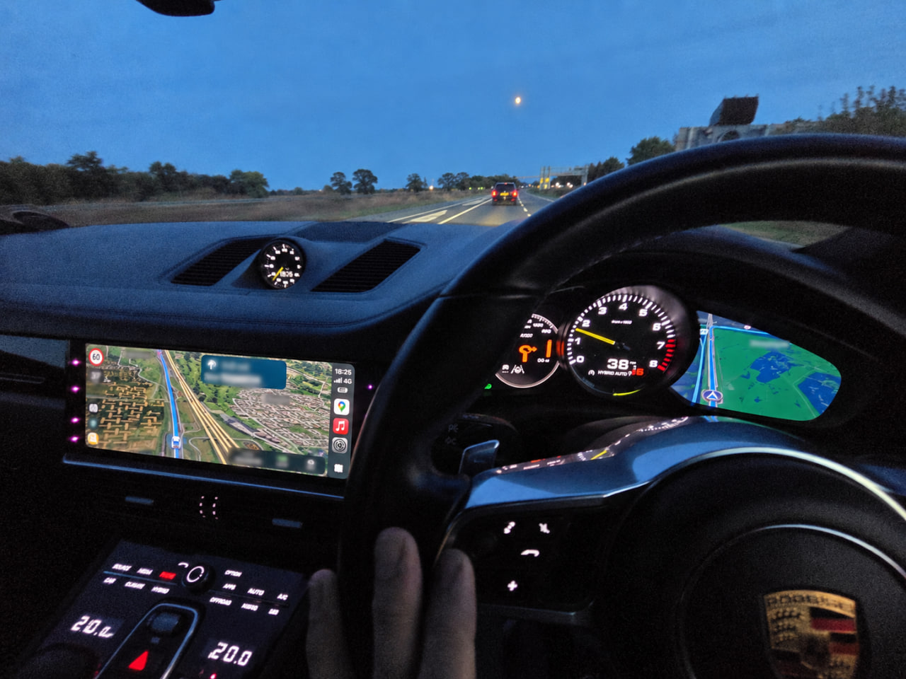
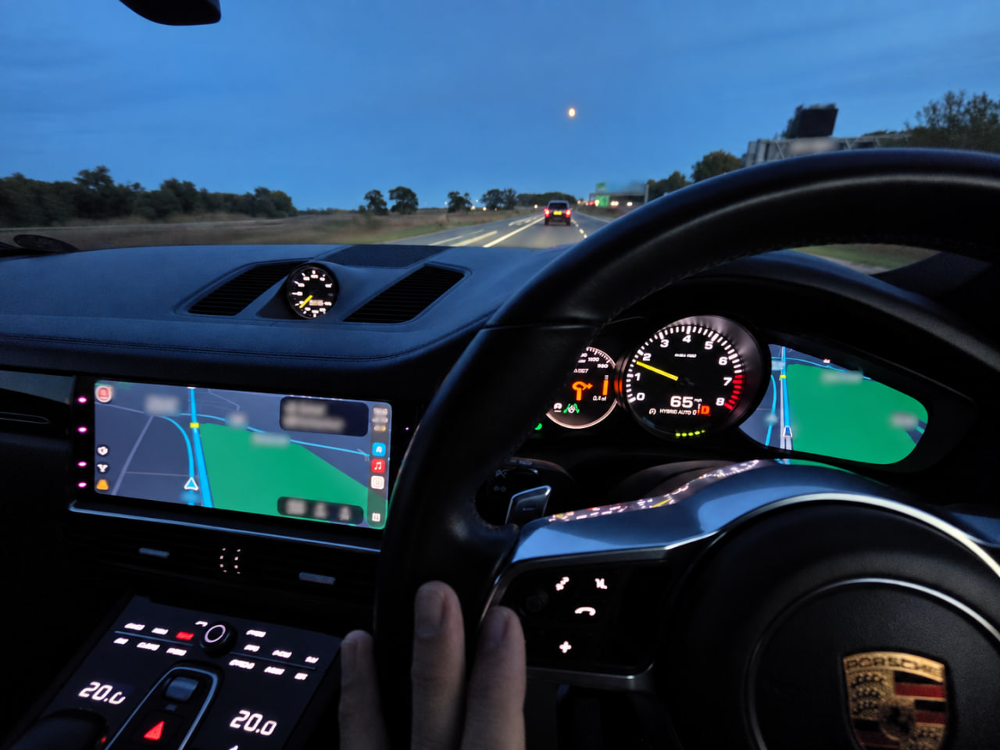

Bridge Android Auto and CarPlay navigation from Porsche PCM5 / VW / Audi MH2P and MHI2 / PCM4 to the instrument cluster display. CarPlay cluster rendering now live.




Turns the digital instrument cluster on Porsche PCM5 / VW / Audi MH2P into a proper second navigation display driven by your phone — both Android Auto and CarPlay. Live map view, turn-by-turn arrows on the physical dial, seamless handoff back to native Porsche navigation when the phone disconnects.
Apple Maps, Google Maps, Waze — iPhone navigation renders on the digital cluster in real time. Turn arrows on the physical dial too.
Live Android Auto navigation view on the cluster — Google Maps, Waze, and every other AA-compatible nav app.
Turn arrows, distance, road names, roundabouts, highway exits, lane guidance — everything from your phone rendered on the cluster arrow display.
When the phone disconnects, the built-in Porsche navigation reclaims the cluster automatically. No reboot, no menu-diving.
You can leave the centre display on native infotainment and the cluster keeps showing phone nav underneath. HMI-off / HMI-on transitions no longer kill the mirror.
Automatic km/mi and LHD/RHD detection via platform services with JSON country fallback. Supports 60+ countries.
Runtime-configurable logging, heartbeat, units, and more via JSON. Override via USB/SD without reinstall.
Detailed dual-timestamp logs with optional privacy hashing and external USB/SD output for support and debugging.
Per-car overrides for Cayenne, 911, Panamera, Macan, Audi A7. Bargraph mode and cluster behaviour auto-detected per variant.
Model years 2019–2021. Firmware range 26xx–29xx. Other firmwares can be enabled on request; the OEM/firmware gate is tunable in the installer.
| Model | Head unit | Status |
|---|---|---|
| Cayenne (9Y0) | PCM5 / MH2P | Supported |
| Macan | PCM5 / MH2P | Supported |
| Panamera | PCM5 / MH2P | Supported |
| 992.1 (911) | PCM5 / MH2P | Supported |
| 718 (Cayman / Boxster) | MHI2 / PCM4 | AA and CarPlay working (not released) |
CarPlay nav in the cluster is live for the first time. Android Auto black-screen-on-connect race fixed. Session stability across park/drive cycles. HMI-independent operation. Native maps handoff on disconnect. Turn-by-turn fixes across both platforms.
Android Auto working. CarPlay next.
uninstall.txt.template to uninstall.txtUpdate/uninstall.sh runs automatically and restores originals from backupuninstall.txt from the SD card afterwards so it doesn't re-trigger on the next bootClusterIntegration bridges the Android Auto DSI event stream and the CarPlay RGI event stream to the Porsche instrument cluster BAP navigation protocol, plus a second video stream from the phone that is decoded on the head unit and composited to the cluster's dedicated video surface.
Phone (Android Auto or CarPlay)
↓
Nav events (DSI / RGI) + H.264 video stream
↓ ↓
ClusterIntegration Cluster daemon
├─ event → BAP maneuver ├─ NvMedia H.264 decode
├─ heartbeat (every 2s) ├─ YV12 → RGBA
└─ CombiBAPServiceNavi └─ Cluster video window
↓ ↓
Instrument Cluster (arrow dial + video display)All platform services are injected via setters after construction:
| Service | Purpose |
|---|---|
CombiBAPServiceNavi | BAP cluster output — maneuver, distance, RGStatus, destination |
ISysServices | Unit system detection, car clock, car type/variant detection |
ICarCoreServices | Drive-side detection via exteriorLight().leftHandTraffic() |
StorageMountHandler | Remounts USB/SD R/W for external log writing |
ICarStatisticsService | Injected but not currently used in active code |
Maps eventCode (1–19) + turnSide + angle + num to a BAP maneuver descriptor.
Direction is a 0–255 byte (0=straight, 64=left/90°, 128=back/180°, 192=right/270°).
| Event(s) | Translation |
|---|---|
event=3–5 (turns) | TURN, direction from angle or fallback to turnSide |
event=6 (U-turn) | UTURN |
event=7 (on-ramp) | TURN_ON_MAINROAD, direction from turnSide |
event=8/10 (off-ramp/merge) | EXIT_LEFT or EXIT_RIGHT based on turnSide; side=0 → FOLLOW_STREET |
event=9 (fork) | FORK_2 |
event=14 (STRAIGHT/KEEP) | num==1 = Waze lane-keep → FOLLOW_STREET; num==0 or num>1 = motorway exit → EXIT_LEFT/RIGHT |
event=11–13 (roundabout) | ROUNDABOUT_TRS_LEFT/RIGHT. RHD angle correction: (540−angle)%360; LHD: (angle+180)%360. T-junction override: 180° → 0° when exit ≤ 2 |
event=16/17 (ferry) | FERRY |
event=19 (destination preview) | Sets flag, falls through as FOLLOW_STREET. DESTINATION symbol shown only on event=0 valid=2 |
road|eventCode|turnSide. New maneuver resets baseline distance and bypasses throttle for first update.(1 − distance/maneuverInitialDistance) × 100, clamped 0–100.A daemon timer fires every heartbeatInterval ms (default 2000ms) while navigation is active. It resends the last cached maneuver, distance, bargraph, and destination data to continuously override the cluster's native navigation display.
When bargraphMode="auto", the car type is queried at runtime via sysServices.config().carType():
| Car | carClass | generation | Resolved mode |
|---|---|---|---|
| Cayenne E3 | 5 | 3 | "always" |
| 911 992 | 6 | 8 | "always" |
| Panamera G2 | 6 | 2 | "always" |
| Macan | 4 | 1 | "distance" |
| Unknown | any | any | "always" (safe default) |
Explicit JSON values always override auto-detection.
Two parallel log files: plain (full road names) and hashed (road names, music metadata replaced with [HASH_nnn] for privacy).
Each entry has a dual timestamp: QNX boot time + real car clock.
When enableExternalLogging=true, logs are written to USB/SD if writable, with automatic fallback to /tmp.
The config file cluster_config.json is installed on the head unit. To override without reinstalling, place a file on a USB stick or SD card — the app checks these paths first:
/fs/usb0_0/cluster_config.json
/fs/usb1_0/cluster_config.json
/fs/sda0/cluster_config.json
/fs/sdb0/cluster_config.json| Key | Type | Default | Description |
|---|---|---|---|
enableFileLogging | bool | true | Master switch for all file logging. |
enableFileHashing | bool | false | Write a second log with road names/music hashed for privacy. |
enableExternalLogging | bool | false | Write logs to USB/SD if present; falls back to logFilePath. |
logFilePath | string | /tmp/cluster.log | Plain log file path. |
hashedLogFilePath | string | /tmp/cluster_hashed.log | Hashed log file path. |
logFileSize | int (MB) | 50 | Max file size before rotation. Range: 1–100. |
| Key | Type | Default | Description |
|---|---|---|---|
enableRoundaboutLatching | bool | true | Cache and hold roundabout exit direction across ENTER→CONTINUE→EXIT events to prevent arrow flickering. |
enableHeartbeat | bool | true | Periodically resend last maneuver+distance to prevent native nav from overwriting. |
heartbeatInterval | int (ms) | 2000 | Heartbeat period. Range: 100–10000. |
maneuverStateMask | int | 0 | Bitmask for updateManeuverState calls. 0 = disabled. bit0=FOLLOW (>500m), bit1=PREPARE (200–500m), bit2=DISTANCE (50–200m), bit3=CALL_FOR_ACTION (<50m). Example: 15 = all states. |
| Key | Type | Default | Description |
|---|---|---|---|
forceImperial | bool | false | Always use miles/yards, ignoring car settings. |
forceRHD | bool | false | Always treat vehicle as right-hand drive. |
metricUnitThreshold | int (m) | 100 | Below this, display switches from km to m. Range: 50–5000. |
imperialUnitThreshold | int (m) | 161 | Below this (~0.1 mi), display switches from miles to yards. Range: 50–5000. |
destinationDisplayDuration | int (ms) | 5000 | How long to hold arrival maneuver on screen before clearing. Range: 0–10000. |
| Key | Type | Default | Description |
|---|---|---|---|
bargraphMode | string | "auto" | "auto" — detect car variant at runtime. "always" — send both text and bargraph. "distance" — text only. "dynamic" — bargraph only within dynamicBargraphDistance. |
dynamicBargraphDistance | int (m) | 100 | In "dynamic" mode: distance below which bargraph replaces text. Range: 10–500. |
dynamicBargraphPercent | int (%) | 50 | In "dynamic" mode: for short maneuvers, switch point as % of initial distance. Range: 10–90. |
Controls how aggressively distance updates are sent per proximity zone. Each zone has a boundary (upper edge in metres), distance threshold (minimum change to trigger a send), and rateLimit (minimum ms between sends). now has no boundary — catch-all below veryClose.boundary.
| Zone | Default boundary | Default distance | Default rateLimit |
|---|---|---|---|
veryFar | 5000 m | 100 m | 2000 ms |
far | 1000 m | 50 m | 500 ms |
approaching | 500 m | 25 m | 250 ms |
near | 200 m | 15 m | 200 ms |
close | 100 m | 15 m | 150 ms |
veryClose | 50 m | 10 m | 120 ms |
now | — | 5 m | 100 ms |
"dynamicThresholds": {
"veryFar": { "boundary": 5000, "distance": 100, "rateLimit": 2000 },
"far": { "boundary": 1000, "distance": 50, "rateLimit": 500 },
"approaching":{ "boundary": 500, "distance": 25, "rateLimit": 250 },
"near": { "boundary": 200, "distance": 15, "rateLimit": 200 },
"close": { "boundary": 100, "distance": 15, "rateLimit": 150 },
"veryClose": { "boundary": 50, "distance": 10, "rateLimit": 120 },
"now": { "distance": 5, "rateLimit": 100 }
}Country overrides for when locale cannot be detected from platform services. forceImperial and forceRHD override this table entirely.
{ "code": "GB", "name": "United Kingdom", "rhd": true, "imperial": true }
{ "code": "US", "name": "United States", "rhd": false, "imperial": true }
{ "code": "DE", "name": "Germany", "rhd": false, "imperial": false }Two years of evenings and weekends. Reverse engineering of the QNX Screen API, NvMedia decoder, iAP2 protocol, Android Auto and CarPlay wire protocols, Porsche's BAP cluster protocol, and the composition stack on both PCM5 and MHI2 head units.
Rough labor equivalent at specialist embedded / reverse-engineering contractor rates: $90k–$200k. For an automotive middleware vendor doing this cleanly with docs and full test rig: $250k–$400k. What an OEM would price this at as a factory feature: $500–$2000 per vehicle.
This project is free. None of that value is going anywhere except back into more releases.
If someone is asking you for money for a cluster mod built on this work, they got the underlying code for free too.
This project is the result of extensive reverse-engineering and testing on MH2P. Contributions welcome via the ModKit Discord.
LukaDev: Managing screens in VW/MIB2, CarPlay RGI and GAL hacking, https://github.com/luka-dev/mib2q-carplay-rgi/
One1Blt: Android Auto / VNC to MIB2 rendering, https://github.com/OneB1t/VcMOSTRenderMqb
adi961: Turn-by-turn to VC integration, https://github.com/adi961/mib2-android-auto-vc
LawPaul: MH2P Modkit, https://lawpaul.github.io/MH2p_SD_ModKit_Site
litdreams10: general platform knowledge, Android Auto testing
ModKit Discord community: testing, bug reports, cross-car validation